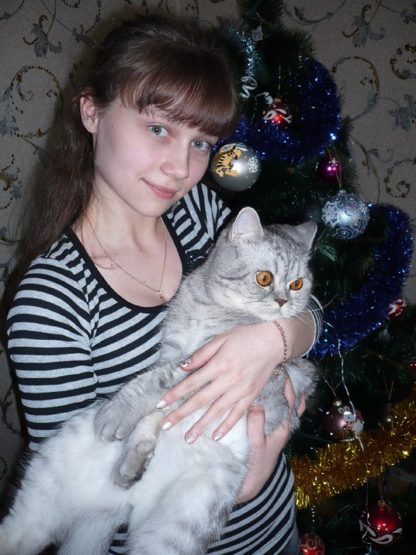

Про меня
Меня зовут Маргарита
I'm a novice developer with six months of experience. Recently I've received a master's degree in applied mathematics and computer science and Now I'm a junior risk analyst in an international microfinance company. But I've been interested in web development for a long time, especially frontend and developed my own projects, such as weather widget, multi-user web chat, portfolio website. Also I'm fond of reading books, playing board games with friends in my free time.
Web-разработка
Developing SPA applications, mainly the client part
using frontend technologies.

Риск Аналитика
Searching of the client's microfinance indicators to reduce
risks leading to financial losses of the company. Analysis of the
impact of indicators such as delinquency, customer profitability,
customer retention(RR), net present value(NPV),working with database,
libraries for data processing and analysis.